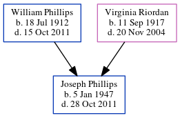

Joseph Raymond Phillips 1947 - 2011
[ Home ] | [ Calendar ] | [ Surnames Index ] | [ Census Index ] | [ Family History ]The child of William Phillips (a telegram delivery man per census at age 17) and Virginia Riordan, Joseph Phillips, the uncle of Michele Copp (née Phillips), was born in Georgia on Jan 5, 19471. In 1950, he was living in Atlanta, Fulton, Georgia, USA1.
He died on Oct 28, 2011 in Palm Bay, Brevard, Florida, USA.
Parents
- William Hiram was born on Jul 18, 1912
- Virginia Rita Mae was born on Sep 11, 1917
Citations
- 1950 United States Federal Census Ancestry.com Operations, Inc. (Department of Commerce. Bureau of the Census. 1913-1/1/1972. Population Schedules for the 1950 Census, 1950 - 1950. Washington, DC: National Archives at Washington, DC. Population Schedules for the 1950 Census, 1950 - 1950. NAID: 43290879. Records of the Bureau of the Census, 1790 - 2007, Record Group 29. National Archives at Washington, DC., Washington, DC.) (Relation to Head: Son; Marital Status: Never Married)
Family Tree
Generated by ged2site. Last updated on Jun 6, 2024